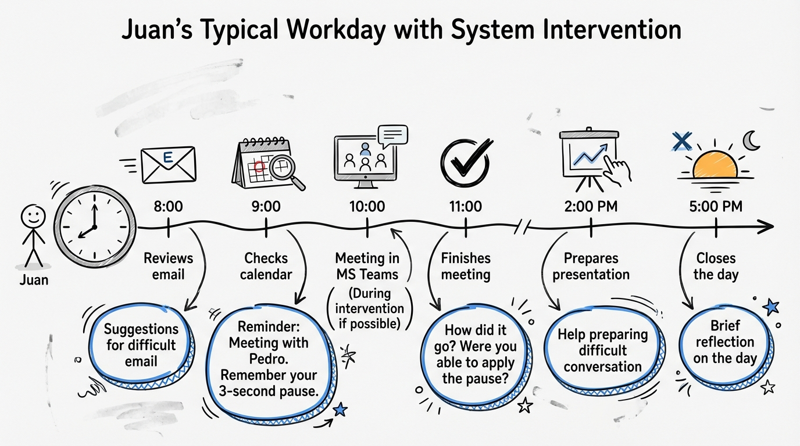
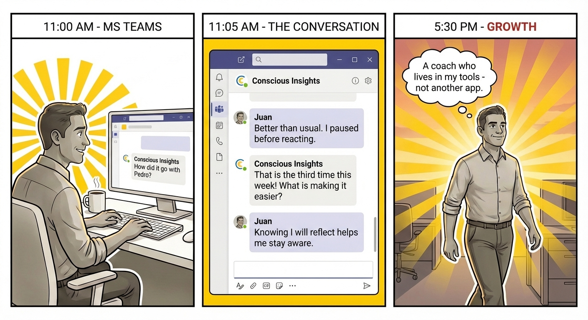

Traditional coaching works once and ends. Our iterative cycle works N times — continuous adjustment, not a one-time intervention.
Our Model
Integrated Change Cycle
Two partners working together: the Thinking Partner builds consciousness through coaching, the Accountability Partner drives action through microhabits and follow-up.
The Journey
From Who I Am to Who I Want to Be
Transformation isn't linear — it's a dynamic journey with setbacks, insights, and consciousness leaps. The system adapts to each person's unique path.
A Day in the Life
Juan's Typical Workday
The system integrates into Juan's existing workflow — appearing in his calendar, Teams, and email at the right moments throughout the day.

User Story
Before the Meeting
Juan prepares for a tough conversation with contextual reminders in his calendar and phone — the system meets him where he already works.
User Story
Email Response
When Juan receives a challenging email, Conscious Insights appears in Outlook to help him pause and respond thoughtfully instead of reacting.
User Story
After the Meeting
Post-meeting reflection happens right in MS Teams. Juan tracks his progress and builds awareness through quick conversational check-ins.

How It Works
Integration Architecture
Four layers working together: Context Manager pulls from user's world, Structured Memory tracks their journey, unified UX across Thinking + Accountability partners.
Roadmap
Feature Dependencies
Building from the foundation up: Iterative Cycle → Conversational Follow-up → MS Teams Integration → Structured Memory → and beyond.
Why We Win
Defensible Moat
Anyone can build an AI chatbot. Our moat is the complete change methodology, orchestrated behavior cycles, deep integrations, and structured user-trajectory memory.